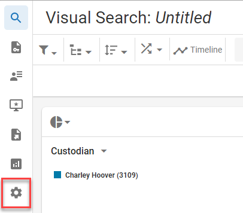

Manage Review Case Settings
Administrators have the ability to view and modify settings for Review cases in . These settings are available in the Review module and are configured on a case-by-case basis. When you enter a case, you can use the navigation pane on the left to access your general case settings. Here you have control over index management, relationships, redaction categories, tag palettes, persistent highlighting, pick lists, coding forms, and performance management.
Navigate to Case Settings
-
Open and select a case card.

-
Click the Enter Case button.

-
The Visual Search dashboard appears. In the left navigation panel, click the Case Settings button.

-
The general case settings tabs appear.

See the following topics to learn how to configure specific case settings.
Manage a Search Index
Manage Relationships
Manage Redaction Categories
Manage Tag Palettes
Manage Persistent Highlighting
Manage Coding Forms
Manage Performance